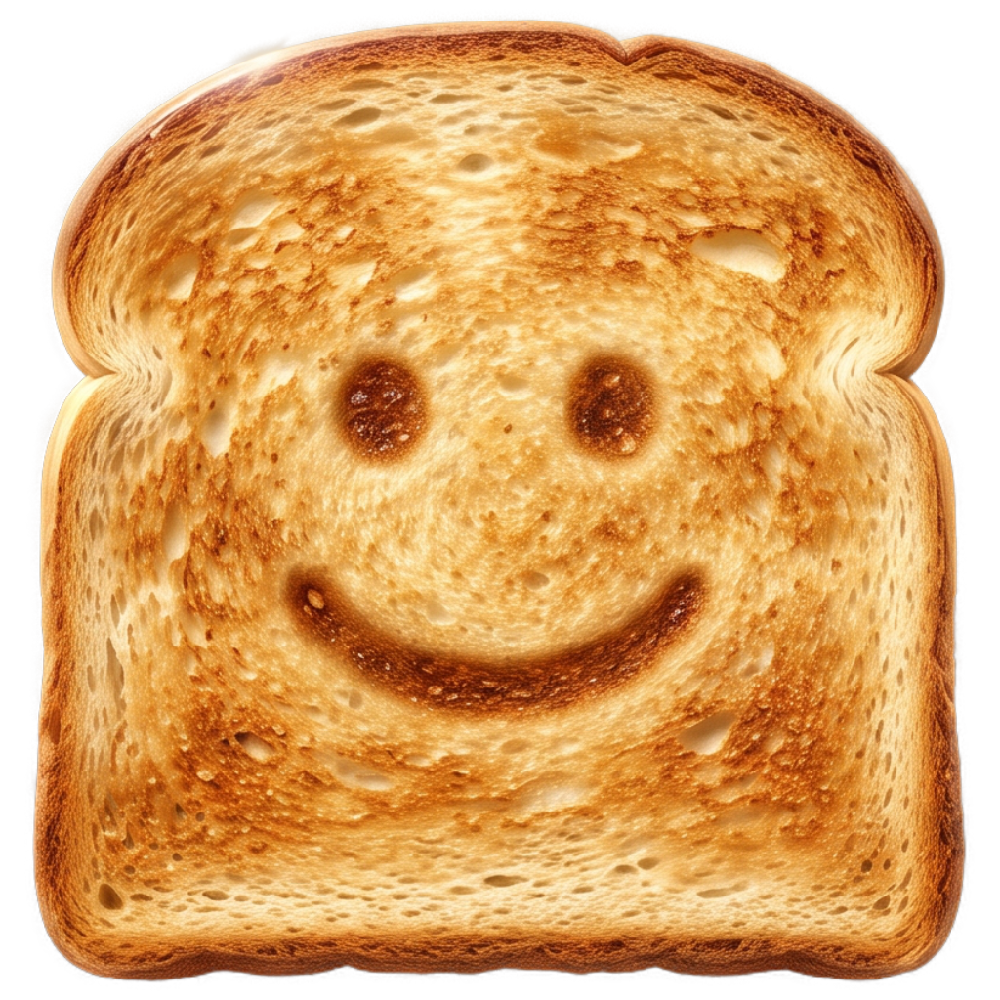

Toast
Python-syntax kernels for Blender geometry nodes, compiled to native code
n = noise(@position * 4) @position += @normal * n * 0.2 output("top", @normal.z > 0.7)

n = noise(@position * 4) @position += @normal * n * 0.2 output("top", @normal.z > 0.7)